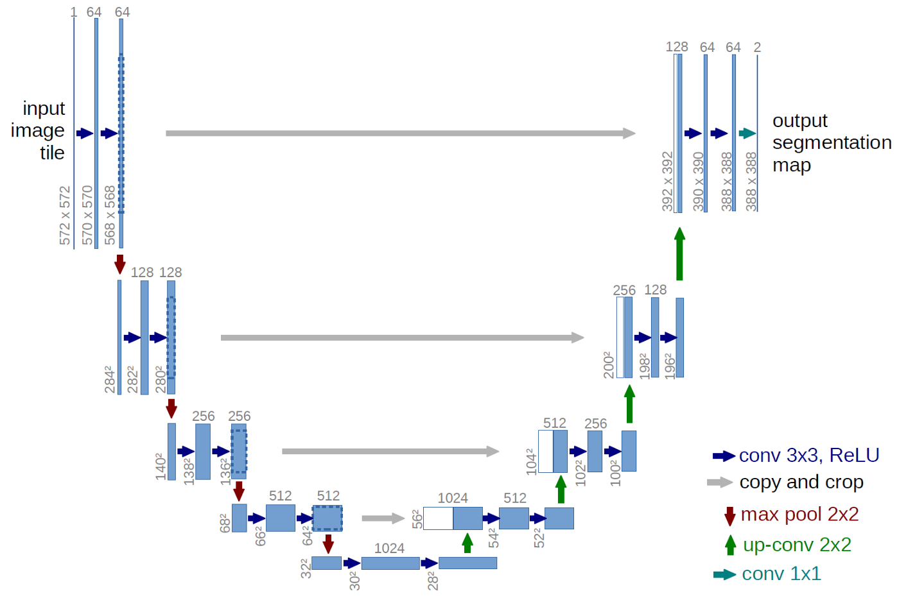
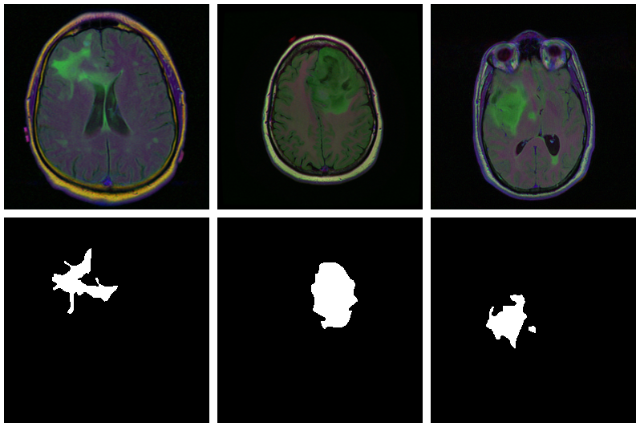
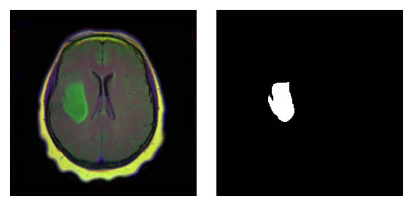
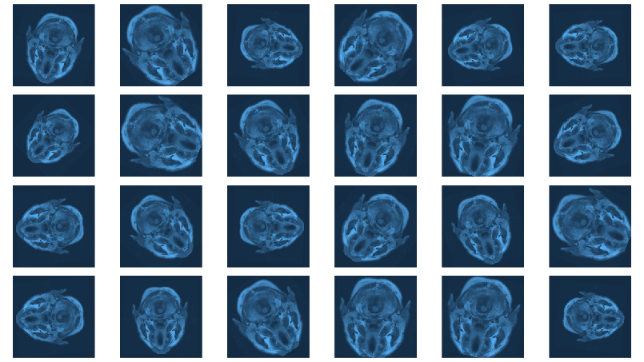

When what is not enough
True, sometimes it’s vital to distinguish between different kinds of objects. Is that a car speeding towards me, in which case I’d better jump out of the way? Or is it a huge terrier (in which case I’d probably do the same)? Often in real life though, instead of coarse-grained classification, what is needed is fine-grained segmentation.
Zooming in on images, we’re not looking for a single label; instead, we want to classify every pixel according to some criterion:
In medicine, we may want to distinguish between different cell types, or identify tumors.
In various earth sciences, satellite data are used to segment terrestrial surfaces.
To enable use of custom backgrounds, video-conferencing software has to be able to tell foreground from background.
Image segmentation is a form of supervised learning: Some kind of ground truth is needed. Here, it comes in form of a mask – an image, of spatial resolution identical to that of the input data, that designates the true class for every pixel. Accordingly, classification loss is calculated pixel-wise; losses are then summed up to yield an aggregate to be used in optimization.
The “canonical” architecture for image segmentation, around since 2015, is U-Net.
U-Net
Here is the prototypical U-Net, as depicted in the original Rönneberger et al. paper (Ronneberger, Fischer, and Brox 2015).
Of this architecture, numerous variants exist; you could use different layer sizes, activations, ways to achieve downsizing and upsizing, and more. However, there is one defining characteristic: The U-shape, stabilized by the “bridges” crossing over horizontally at all levels.

In a nutshell, the left-hand side of the U resembles the convolutional architectures used in image classification: It successively reduces spatial resolution. At the same time, another dimension – the channels dimension – is used to build up a hierarchy of features, ranging from very basic to very specialized.
Unlike in classification, however, the output should have the same spatial resolution as the input. Thus, we need to upsize again – this is taken care of by the right-hand side of the U. But: How are we going to arrive at a good per-pixel classification, now that so much spatial information has been lost?
This is what the “bridges” are for: At each level, the input to an upsampling layer is a concatenation of the previous layer’s output – which went through the whole compression/decompression routine – and some preserved intermediate representation from the downsizing phase. In this way, a U-Net architecture combines attention to detail with feature extraction.
Brain image segmentation
With U-Net, domain applicability is as broad as the architecture is flexible. Here, we want to detect abnormalities in brain scans. The dataset, used in Buda, Saha, and Mazurowski (2019), contains MR images together with manually created FLAIR abnormality segmentation masks. It is available on Kaggle.
Nicely, the paper is accompanied by a GitHub repository. Below, we closely follow (though not exactly replicate) the authors’ preprocessing and data augmentation code.
As is often the case in medical imaging, there is notable class imbalance in the data. For every patient, sections have been taken at multiple positions. (Number of sections per patient varies.) Most sections do not exhibit any lesions; the corresponding masks are colored black everywhere.
Here are three examples where the masks do indicate abnormalities:

Let’s see if we can build a U-Net that generates such masks for us.
Data
Before you start typing, here is a Colaboratory notebook to conveniently follow along.
We use pins to obtain the data. Please see this introduction if you haven’t been using that package before.
library(torch)
library(torchvision)
library(tidyverse)
library(magick)
library(zeallot)
library(cowplot)
library(zip)
library(pins)
torch_manual_seed(777)
set.seed(777)
# use your own kaggle.json here
pins::board_register_kaggle(token = "~/kaggle.json")
files <- pins::pin_get("mateuszbuda/lgg-mri-segmentation", board = "kaggle", extract = FALSE)
The dataset is not that big – it includes scans from 110 different patients –, so we’ll have to do with just a training and a validation set. (Don’t do this in real life, as you’ll inevitably end up fine-tuning on the latter.)
train_dir <- "data/mri_train"
valid_dir <- "data/mri_valid"
if(dir.exists(train_dir)) unlink(train_dir, recursive = TRUE, force = TRUE)
if(dir.exists(valid_dir)) unlink(valid_dir, recursive = TRUE, force = TRUE)
zip::unzip(files, exdir = "data")
file.rename("data/kaggle_3m", train_dir)
# this is a duplicate, again containing kaggle_3m (evidently a packaging error on Kaggle)
# we just remove it
unlink("data/lgg-mri-segmentation", recursive = TRUE)
dir.create(valid_dir)
Of those 110 patients, we keep 30 for validation. Some more file manipulations, and we’re set up with a nice hierarchical structure, with each of train_dir and valid_dir holding their per-patient sub-directories, respectively.
valid_indices <- sample(1:length(patients), 30)
patients <- list.dirs(train_dir, recursive = FALSE)
for (i in valid_indices) {
dir.create(file.path(valid_dir, basename(patients[i])))
for (f in list.files(patients[i])) {
file.rename(file.path(train_dir, basename(patients[i]), f), file.path(valid_dir, basename(patients[i]), f))
}
unlink(file.path(train_dir, basename(patients[i])), recursive = TRUE)
}
We now need a dataset that knows what to do with these files.
Dataset
Like every torch dataset, this one has initialize() and .getitem() methods. initialize() creates an inventory of scan and mask file names, to be used by .getitem() when it actually reads those files. In contrast to what we’ve seen in previous posts, though , .getitem() does not simply return input-target pairs in order. Instead, whenever the parameter random_sampling is true, it will perform weighted sampling, preferring items with sizable lesions. This option will be used for the training set, to counter the class imbalance mentioned above.
The other way training and validation sets will differ is use of data augmentation. Training images/masks may be flipped, re-sized, and rotated; probabilities and amounts are configurable.
An instance of brainseg_dataset encapsulates all this functionality:
brainseg_dataset <- dataset(
name = "brainseg_dataset",
initialize = function(img_dir,
augmentation_params = NULL,
random_sampling = FALSE) {
self$images <- tibble(
img = grep(
list.files(
img_dir,
full.names = TRUE,
pattern = "tif",
recursive = TRUE
),
pattern = 'mask',
invert = TRUE,
value = TRUE
),
mask = grep(
list.files(
img_dir,
full.names = TRUE,
pattern = "tif",
recursive = TRUE
),
pattern = 'mask',
value = TRUE
)
)
self$slice_weights <- self$calc_slice_weights(self$images$mask)
self$augmentation_params <- augmentation_params
self$random_sampling <- random_sampling
},
.getitem = function(i) {
index <-
if (self$random_sampling == TRUE)
sample(1:self$.length(), 1, prob = self$slice_weights)
else
i
img <- self$images$img[index] %>%
image_read() %>%
transform_to_tensor()
mask <- self$images$mask[index] %>%
image_read() %>%
transform_to_tensor() %>%
transform_rgb_to_grayscale() %>%
torch_unsqueeze(1)
img <- self$min_max_scale(img)
if (!is.null(self$augmentation_params)) {
scale_param <- self$augmentation_params[1]
c(img, mask) %<-% self$resize(img, mask, scale_param)
rot_param <- self$augmentation_params[2]
c(img, mask) %<-% self$rotate(img, mask, rot_param)
flip_param <- self$augmentation_params[3]
c(img, mask) %<-% self$flip(img, mask, flip_param)
}
list(img = img, mask = mask)
},
.length = function() {
nrow(self$images)
},
calc_slice_weights = function(masks) {
weights <- map_dbl(masks, function(m) {
img <-
as.integer(magick::image_data(image_read(m), channels = "gray"))
sum(img / 255)
})
sum_weights <- sum(weights)
num_weights <- length(weights)
weights <- weights %>% map_dbl(function(w) {
w <- (w + sum_weights * 0.1 / num_weights) / (sum_weights * 1.1)
})
weights
},
min_max_scale = function(x) {
min = x$min()$item()
max = x$max()$item()
x$clamp_(min = min, max = max)
x$add_(-min)$div_(max - min + 1e-5)
x
},
resize = function(img, mask, scale_param) {
img_size <- dim(img)[2]
rnd_scale <- runif(1, 1 - scale_param, 1 + scale_param)
img <- transform_resize(img, size = rnd_scale * img_size)
mask <- transform_resize(mask, size = rnd_scale * img_size)
diff <- dim(img)[2] - img_size
if (diff > 0) {
top <- ceiling(diff / 2)
left <- ceiling(diff / 2)
img <- transform_crop(img, top, left, img_size, img_size)
mask <- transform_crop(mask, top, left, img_size, img_size)
} else {
img <- transform_pad(img,
padding = -c(
ceiling(diff / 2),
floor(diff / 2),
ceiling(diff / 2),
floor(diff / 2)
))
mask <- transform_pad(mask, padding = -c(
ceiling(diff / 2),
floor(diff /
2),
ceiling(diff /
2),
floor(diff /
2)
))
}
list(img, mask)
},
rotate = function(img, mask, rot_param) {
rnd_rot <- runif(1, 1 - rot_param, 1 + rot_param)
img <- transform_rotate(img, angle = rnd_rot)
mask <- transform_rotate(mask, angle = rnd_rot)
list(img, mask)
},
flip = function(img, mask, flip_param) {
rnd_flip <- runif(1)
if (rnd_flip > flip_param) {
img <- transform_hflip(img)
mask <- transform_hflip(mask)
}
list(img, mask)
}
)
After instantiation, we see we have 2977 training pairs and 952 validation pairs, respectively:
As a correctness check, let’s plot an image and associated mask:

With torch, it is straightforward to inspect what happens when you change augmentation-related parameters. We just pick a pair from the validation set, which has not had any augmentation applied as yet, and call valid_ds$<augmentation_func()> directly. Just for fun, let’s use more “extreme” parameters here than we do in actual training. (Actual training uses the settings from Mateusz’ GitHub repository, which we assume have been carefully chosen for optimal performance.1)
img_and_mask <- valid_ds[77]
img <- img_and_mask[[1]]
mask <- img_and_mask[[2]]
imgs <- map (1:24, function(i) {
# scale factor; train_ds really uses 0.05
c(img, mask) %<-% valid_ds$resize(img, mask, 0.2)
c(img, mask) %<-% valid_ds$flip(img, mask, 0.5)
# rotation angle; train_ds really uses 15
c(img, mask) %<-% valid_ds$rotate(img, mask, 90)
img %>%
transform_rgb_to_grayscale() %>%
as.array() %>%
as_tibble() %>%
rowid_to_column(var = "Y") %>%
gather(key = "X", value = "value", -Y) %>%
mutate(X = as.numeric(gsub("V", "", X))) %>%
ggplot(aes(X, Y, fill = value)) +
geom_raster() +
theme_void() +
theme(legend.position = "none") +
theme(aspect.ratio = 1)
})
plot_grid(plotlist = imgs, nrow = 4)

Now we still need the data loaders, and then, nothing keeps us from proceeding to the next big task: building the model.
batch_size <- 4
train_dl <- dataloader(train_ds, batch_size)
valid_dl <- dataloader(valid_ds, batch_size)
Model
Our model nicely illustrates the kind of modular code that comes “naturally” with torch. We approach things top-down, starting with the U-Net container itself.
unet takes care of the global composition – how far “down” do we go, shrinking the image while incrementing the number of filters, and then how do we go “up” again?
Importantly, it is also the system’s memory: In forward(), it keeps track of layer outputs seen going “down,” to be added back in going “up.”
unet <- nn_module(
"unet",
initialize = function(channels_in = 3,
n_classes = 1,
depth = 5,
n_filters = 6) {
self$down_path <- nn_module_list()
prev_channels <- channels_in
for (i in 1:depth) {
self$down_path$append(down_block(prev_channels, 2 ^ (n_filters + i - 1)))
prev_channels <- 2 ^ (n_filters + i -1)
}
self$up_path <- nn_module_list()
for (i in ((depth - 1):1)) {
self$up_path$append(up_block(prev_channels, 2 ^ (n_filters + i - 1)))
prev_channels <- 2 ^ (n_filters + i - 1)
}
self$last = nn_conv2d(prev_channels, n_classes, kernel_size = 1)
},
forward = function(x) {
blocks <- list()
for (i in 1:length(self$down_path)) {
x <- self$down_path[[i]](x)
if (i != length(self$down_path)) {
blocks <- c(blocks, x)
x <- nnf_max_pool2d(x, 2)
}
}
for (i in 1:length(self$up_path)) {
x <- self$up_path[[i]](x, blocks[[length(blocks) - i + 1]]$to(device = device))
}
torch_sigmoid(self$last(x))
}
)
unet delegates to two containers just below it in the hierarchy: down_block and up_block. While down_block is “just” there for aesthetic reasons (it immediately delegates to its own workhorse, conv_block), in up_block we see the U-Net “bridges” in action.
down_block <- nn_module(
"down_block",
initialize = function(in_size, out_size) {
self$conv_block <- conv_block(in_size, out_size)
},
forward = function(x) {
self$conv_block(x)
}
)
up_block <- nn_module(
"up_block",
initialize = function(in_size, out_size) {
self$up = nn_conv_transpose2d(in_size,
out_size,
kernel_size = 2,
stride = 2)
self$conv_block = conv_block(in_size, out_size)
},
forward = function(x, bridge) {
up <- self$up(x)
torch_cat(list(up, bridge), 2) %>%
self$conv_block()
}
)
Finally, a conv_block is a sequential structure containing convolutional, ReLU, and dropout layers.
conv_block <- nn_module(
"conv_block",
initialize = function(in_size, out_size) {
self$conv_block <- nn_sequential(
nn_conv2d(in_size, out_size, kernel_size = 3, padding = 1),
nn_relu(),
nn_dropout(0.6),
nn_conv2d(out_size, out_size, kernel_size = 3, padding = 1),
nn_relu()
)
},
forward = function(x){
self$conv_block(x)
}
)
Now instantiate the model, and possibly, move it to the GPU:
device <- torch_device(if(cuda_is_available()) "cuda" else "cpu")
model <- unet(depth = 5)$to(device = device)
Optimization
We train our model with a combination of cross entropy and dice loss.
The latter, though not shipped with torch, may straightforwardly be implemented manually:
calc_dice_loss <- function(y_pred, y_true) {
smooth <- 1
y_pred <- y_pred$view(-1)
y_true <- y_true$view(-1)
intersection <- (y_pred * y_true)$sum()
1 - ((2 * intersection + smooth) / (y_pred$sum() + y_true$sum() + smooth))
}
dice_weight <- 0.3
Optimization uses stochastic gradient descent (SGD), together with the one-cycle learning rate scheduler introduced in the context of image classification with torch.
optimizer <- optim_sgd(model$parameters, lr = 0.1, momentum = 0.9)
num_epochs <- 20
scheduler <- lr_one_cycle(
optimizer,
max_lr = 0.1,
steps_per_epoch = length(train_dl),
epochs = num_epochs
)
Training
The training loop then follows the usual scheme. One thing to note: Every epoch, we save the model (using torch_save()), so we can later pick the best one, should performance have degraded thereafter.
train_batch <- function(b) {
optimizer$zero_grad()
output <- model(b[[1]]$to(device = device))
target <- b[[2]]$to(device = device)
bce_loss <- nnf_binary_cross_entropy(output, target)
dice_loss <- calc_dice_loss(output, target)
loss <- dice_weight * dice_loss + (1 - dice_weight) * bce_loss
loss$backward()
optimizer$step()
scheduler$step()
list(bce_loss$item(), dice_loss$item(), loss$item())
}
valid_batch <- function(b) {
output <- model(b[[1]]$to(device = device))
target <- b[[2]]$to(device = device)
bce_loss <- nnf_binary_cross_entropy(output, target)
dice_loss <- calc_dice_loss(output, target)
loss <- dice_weight * dice_loss + (1 - dice_weight) * bce_loss
list(bce_loss$item(), dice_loss$item(), loss$item())
}
for (epoch in 1:num_epochs) {
model$train()
train_bce <- c()
train_dice <- c()
train_loss <- c()
for (b in enumerate(train_dl)) {
c(bce_loss, dice_loss, loss) %<-% train_batch(b)
train_bce <- c(train_bce, bce_loss)
train_dice <- c(train_dice, dice_loss)
train_loss <- c(train_loss, loss)
}
torch_save(model, paste0("model_", epoch, ".pt"))
cat(sprintf("\nEpoch %d, training: loss:%3f, bce: %3f, dice: %3f\n",
epoch, mean(train_loss), mean(train_bce), mean(train_dice)))
model$eval()
valid_bce <- c()
valid_dice <- c()
valid_loss <- c()
i <- 0
for (b in enumerate(valid_dl)) {
i <<- i + 1
c(bce_loss, dice_loss, loss) %<-% valid_batch(b)
valid_bce <- c(valid_bce, bce_loss)
valid_dice <- c(valid_dice, dice_loss)
valid_loss <- c(valid_loss, loss)
}
cat(sprintf("\nEpoch %d, validation: loss:%3f, bce: %3f, dice: %3f\n",
epoch, mean(valid_loss), mean(valid_bce), mean(valid_dice)))
}
Epoch 1, training: loss:0.304232, bce: 0.148578, dice: 0.667423
Epoch 1, validation: loss:0.333961, bce: 0.127171, dice: 0.816471
Epoch 2, training: loss:0.194665, bce: 0.101973, dice: 0.410945
Epoch 2, validation: loss:0.341121, bce: 0.117465, dice: 0.862983
[...]
Epoch 19, training: loss:0.073863, bce: 0.038559, dice: 0.156236
Epoch 19, validation: loss:0.302878, bce: 0.109721, dice: 0.753577
Epoch 20, training: loss:0.070621, bce: 0.036578, dice: 0.150055
Epoch 20, validation: loss:0.295852, bce: 0.101750, dice: 0.748757Evaluation
In this run, it is the final model that performs best on the validation set. Still, we’d like to show how to load a saved model, using torch_load() .
Once loaded, put the model into eval mode:
saved_model <- torch_load("model_20.pt")
model <- saved_model
model$eval()
Now, since we don’t have a separate test set, we already know the average out-of-sample metrics; but in the end, what we care about are the generated masks. Let’s view some, displaying ground truth and MRI scans for comparison.
# without random sampling, we'd mainly see lesion-free patches
eval_ds <- brainseg_dataset(valid_dir, augmentation_params = NULL, random_sampling = TRUE)
eval_dl <- dataloader(eval_ds, batch_size = 8)
batch <- eval_dl %>% dataloader_make_iter() %>% dataloader_next()
par(mfcol = c(3, 8), mar = c(0, 1, 0, 1))
for (i in 1:8) {
img <- batch[[1]][i, .., drop = FALSE]
inferred_mask <- model(img$to(device = device))
true_mask <- batch[[2]][i, .., drop = FALSE]$to(device = device)
bce <- nnf_binary_cross_entropy(inferred_mask, true_mask)$to(device = "cpu") %>%
as.numeric()
dc <- calc_dice_loss(inferred_mask, true_mask)$to(device = "cpu") %>% as.numeric()
cat(sprintf("\nSample %d, bce: %3f, dice: %3f\n", i, bce, dc))
inferred_mask <- inferred_mask$to(device = "cpu") %>% as.array() %>% .[1, 1, , ]
inferred_mask <- ifelse(inferred_mask > 0.5, 1, 0)
img[1, 1, ,] %>% as.array() %>% as.raster() %>% plot()
true_mask$to(device = "cpu")[1, 1, ,] %>% as.array() %>% as.raster() %>% plot()
inferred_mask %>% as.raster() %>% plot()
}
We also print the individual cross entropy and dice losses; relating those to the generated masks might yield useful information for model tuning.
Sample 1, bce: 0.088406, dice: 0.387786}
Sample 2, bce: 0.026839, dice: 0.205724
Sample 3, bce: 0.042575, dice: 0.187884
Sample 4, bce: 0.094989, dice: 0.273895
Sample 5, bce: 0.026839, dice: 0.205724
Sample 6, bce: 0.020917, dice: 0.139484
Sample 7, bce: 0.094989, dice: 0.273895
Sample 8, bce: 2.310956, dice: 0.999824
While far from perfect, most of these masks aren’t that bad – a nice result given the small dataset!
Wrapup
This has been our most complex torch post so far; however, we hope you’ve found the time well spent. For one, among applications of deep learning, medical image segmentation stands out as highly societally useful. Secondly, U-Net-like architectures are employed in many other areas. And finally, we once more saw torch’s flexibility and intuitive behavior in action.
Thanks for reading!
Yes, we did a few experiments, confirming that more augmentation isn’t better … what did I say about inevitably ending up doing optimization on the validation set …↩︎